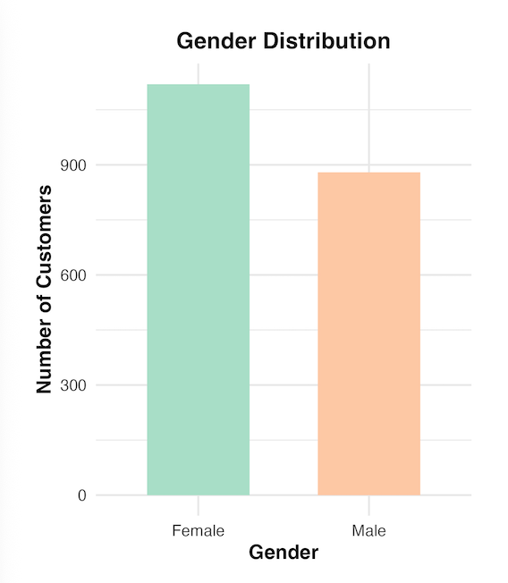
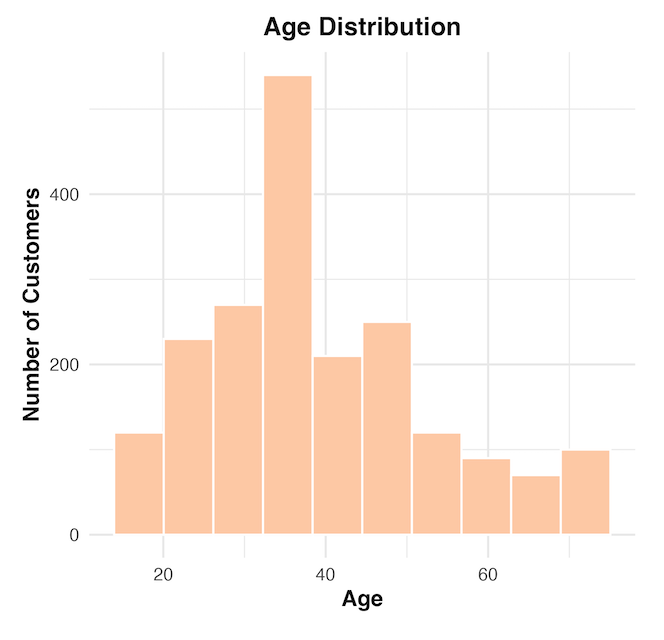
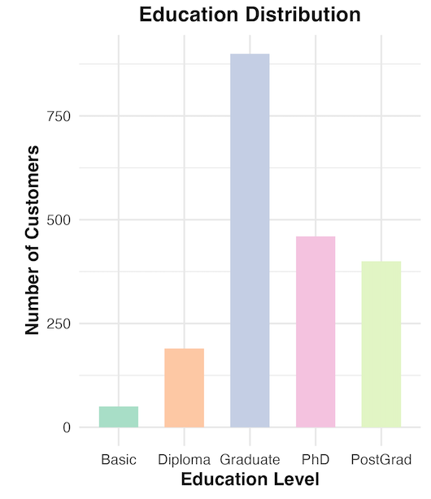
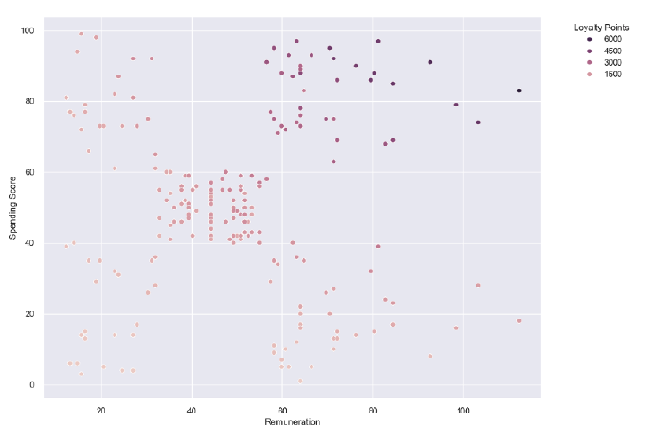
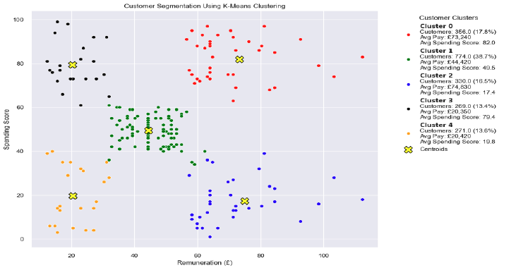

1. Business Context & Demographics
The analysis began by evaluating customer demographics to develop an understanding of who's interacting with the Turtle Games. The initial data mapping reveals a highly specific user base.
- Gender: The customer base leans heavily female, recording noticeably higher engagement and transaction volumes than male counterparts.
- Age: Age distribution models indicate that the primary customer demographic consists of adults, establishing a distinct peak forming around the late 30s to early 40s.
- Education: The audience is demonstrably well-educated; the largest segment of customers holds a "Graduate" level education, closely followed by "PhD" and "Postgraduate" degree holders.



2. Customer Segmentation
Moving forward, I conducted an analysis of the customer behavior as defined by spending habits, renumeration, and loyalty points.
- Scatterplot Metrics: When plotting customer Remuneration (£) against their internal Spending Score (1-100), the dataset begins to fragment into distinct groups.
- K-Means Clustering: By applying K-Means Clustering, an unsupervised Machine Learning algorithm, five distinct groups of customers were uncovered according to their spending habits, income, and allocation of loyalty points. (Cluster 0 to Cluster 4).
- Targeted Personas: These five clusters allow Turtle Games to clearly identify different customer groups that interact with their products, providing a foundation for targeted marketing.


3. Statistical Modeling
Multiple Linear Regression (MLR) was selected as the analytical approach because it effectively models the simultaneous relationship between a continuous target variable and multiple independent predictors. This method provides a clear framework for understanding how underlying factors like spending scores and renumeration drive the allocation of loyalty points.
| Model (Formula) | R-Squared | P-Value | Observation |
|---|---|---|---|
| Baseline Model Loyal_Pts ~ Spend_Score + Pay |
82.69% | < 2.2e-16 | Model prior to data manipulation |
| Transformed Model SqrtLoyal_Pts ~ SqrtSpend_Score + SqrtPay + Age |
92.89% | < 2.2e-16 | Highest predictive ability |
| Transformed Model (Simplified) SqrtLoyal_Pts ~ SqrtSpend_Score + SqrtPay |
91.69% | < 2.2e-16 | Removed Age as predictor, enabling easier explainability |
Although both models utilize square-root transformations to increase linearity the final was ultimately selected to prioritize ease of explainability. By excluding additional variables like age, this allows stakeholders to better understand the straightforward relationship that spending scores and renumeration effectively explain the allocation of loyalty points.
4. Product Performance & Sentiment
By conducting an NLP sentiment analysis of customer reviews and summaries, several aspects are made clear about the data quality and availed impressions.
- Juxtaposing Reviews & Summaries: The summaries are intended to summarize the reviews, however, they don't accomplish this in a consistent manner. The summaries are used idiosyncratically by each individual data logger. This is problematic when trying to conduct a sentiment analysis. An intriguing finding is that the summaries were also used to record one-to-five-star ratings.
- Extracting Ratings From Summaries: When looking at the one-to-five-star ratings, product satisfaction appears to be exceptionally high. The vast majority of ratings are 4 star (n=57) and 5 star (n=378) ratings.
- Product Averages: Approximately 98.4% of reviewed products are rated at 3.0 or higher, while only 1.6% of rated products hold rating below this threshold.
- Making Ratings A Requirement: Only a minority of products are assigned a rating. In the future, it would be highly beneficial to clean-up how summaries are used and to obtain one-to-five star ratings for each recorded transaction. This would provide a rigorous way to assess customer satisfaction empirically.
- Core Impressions: A sentiment analysis provides insight as to whether negative, neutral, or positive sentiments can be attributed to a given review or summary. When strictly for 1- and 2-star ratings extracted frequent keywords: customers found these specific games "boring," "difficult to use," "flimsy," "expensive for what you get," and hindered by "complicated" instructions. The products associated with these ratings require an urgent level of attention by Turtle Games.
- The Truth About Sentiment Analysis: Often complex paragraphs are not well-understood from simple sentiment analysis which have a tendency to lock on to singlular pieces of vocabulary like "good" or "bad," however this does little justice to reviews which express more nuanced impressions.
5. Business Recommendations
- Targeting New Customers: With the allocation of loyalty loints being better understood, this presents a definitive opportunity. It is time to encourage new and lower spending customers to engage with Turtle Games.
- The “Carrot on a Stick” Method: My recommendation is to use loyalty points as a proverbial “carrot on a stick” by introducing sign-up rewards, an increased allocation of points during sales events, and points for engaging with Turtle Games on social media platforms to expand the customer-base.
- Data Quality & Data Annotation: In the future, it would be highly beneficial to clean-up how the transactions are recorded. For instance, ensuring that one-to-five star ratings are associated with each purchase would do wonders. In addition, recording the specific item type and amount spent, plus the time and store location for each transaction would permit for a better assessment of trends over time. Each of these aspects would allow for more prescriptive recommendations that can be tied to specified customer groups.
Full Python & R Notebooks available here.
This analysis addressed Turtle Games' objectives by modeling loyalty point allocation, identifying five distinct customer segments, and analysing customer reviews to understand customer sentiment. Based on these findings, the recommendation is to shift the loyalty points program from rewarding a small subset of high-value customers to attracting new and lower-spending customers through targeted marketing campaigns.